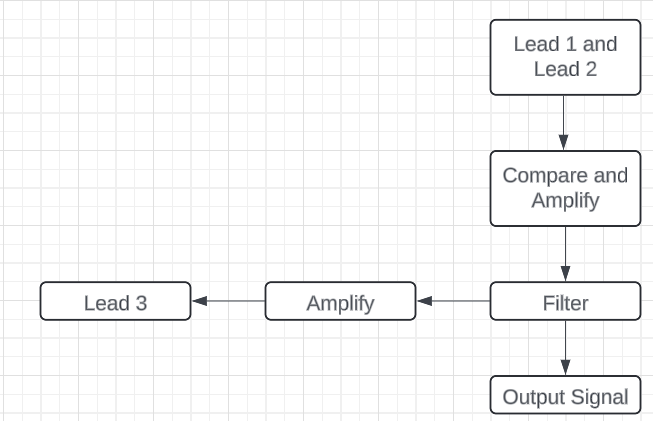
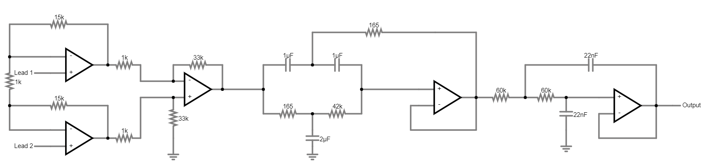

EKG Project
Analog EKG front-end with instrumentation amplifier and filtering to acquire and visualize cardiac signals.

Built an analog EKG acquisition chain to capture heart activity from differential electrodes. The design uses an instrumentation amplifier (INA) followed by filtering stages to reject mains noise and muscular activity, producing a clean signal for display and heart-rate estimation.
The project included research and comparison of multiple candidate topologies, simulation and verification of each stage, and a final lab build. Emphasis was placed on safety, noise reduction, and stable biasing.
System Block Diagram
High-level flow: electrodes → INA → filters → buffer/output.
Reference Schematic
Chosen topology with INA + notch (60 Hz) + low-pass chain.
Simulated the INA and filters to validate gain and frequency response before building.
INA gain verified with differential input (e.g., 15 mV vs 7 mV).
Notch filter strongly attenuates 60 Hz interference.
Low-frequency passband preserved (≈15 Hz).
Low-pass cutoff around 100 Hz (≈−3 dB).
The INA stage was prototyped and validated first, followed by filtering. In lab, a passive low-pass (~417 Hz with available parts) was used to simplify the chain while maintaining readability.
Oscilloscope output of the INA matches simulation within component tolerances.
Completed build with electrode placement (RA/LA/ground).
Clean EKG waveforms were captured; motion artifacts (muscle contraction noise) appeared during movement and hand clenching, demonstrating the importance of stillness during acquisition.
Filtered output shows clear QRS complexes.
Motion/EMG noise introduced by hand movement.
- Instrumentation amplifier (e.g., AD620/INA128)
- Active/notch filters, low-pass filtering
- MCU/DAQ + oscilloscope
- Electrodes & isolation considerations